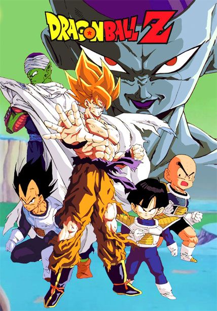

Dragon Ball Z
Criada por Akira Toryiama, a franquia conta a história de Son Goku, guerreiro que descobre ser parte de um legado de poderosos conquistadores alienígenas e passa a defender seu planeta adotivo, a Terra, de outros seres igualmente superfortes e capazes de feitos descomunais.
- Gênero: Aventura
- Ano: 1989